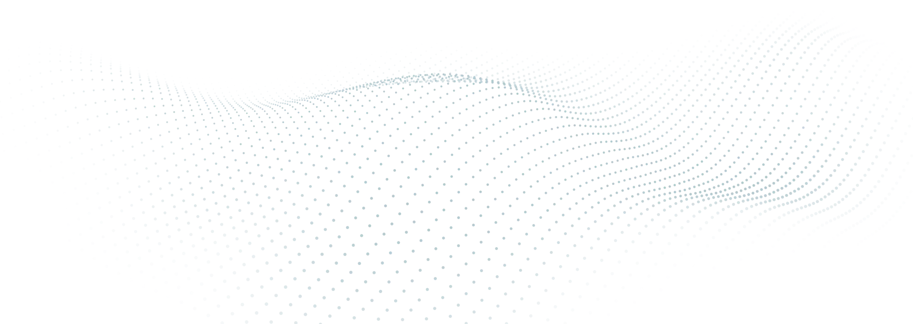

Plataforma de telemedicina
Consultas médicas online.Uma nova abordagem à saúde. Finalmente.
Marque a sua consulta médica em minutos. Cuide da sua saúde a curto e a longo prazo.
- Médica credenciada pela Ordem dos Médicos
- Consultas em português, inglês e espanhol
- Receitas e pedidos de exames no final da consulta
- Sem sala de espera. Sem deslocação.
Não somos uma plataforma com centenas de médicos anónimos. Somos uma clínica onde cada paciente tem uma história e o médico ouve-te, acompanha-te, e pensa na tua saúde a longo prazo.

Clínica Online Premium
Não somos uma plataforma com centenas de médicos anónimos. Somos uma clínica onde cada paciente tem uma história e o médico ouve-te, acompanha-te, e pensa na tua saúde a longo prazo.
Como começar
Como funciona?
-
1
Escolher consulta
Selecione a especialidade
ou atestado. -
2
Agendar consulta
Marque para um dia e hora à sua escolha.
-
3
Efetuar pagamento
Utilize Cartão de Crédito ou Referência Multibanco.
-
4
Consulta médica
Aceda à consulta através do seu smartphone, tablet ou computador.


Não sabe qual consulta deve escolher?
A nossa equipa ajuda a identificar a opção certa para o seu caso e agenda tudo consigo em poucos minutos.
Falar com a equipa